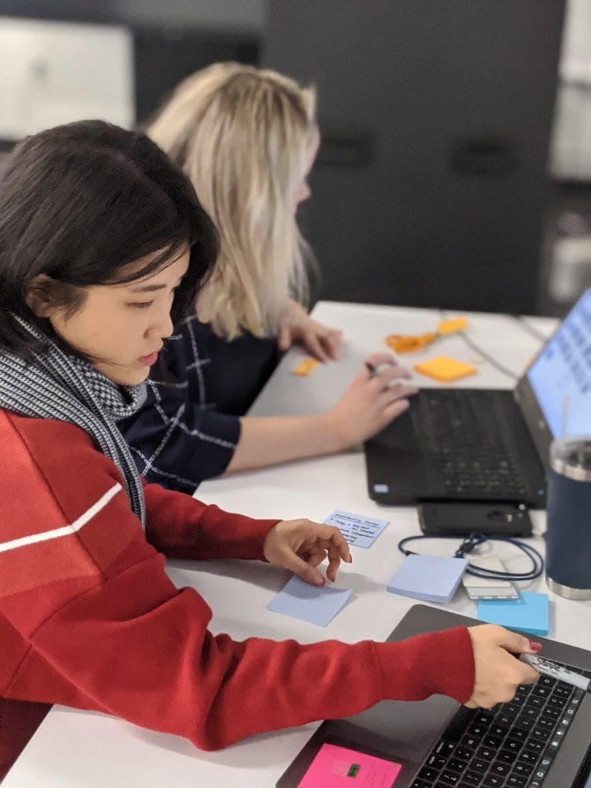
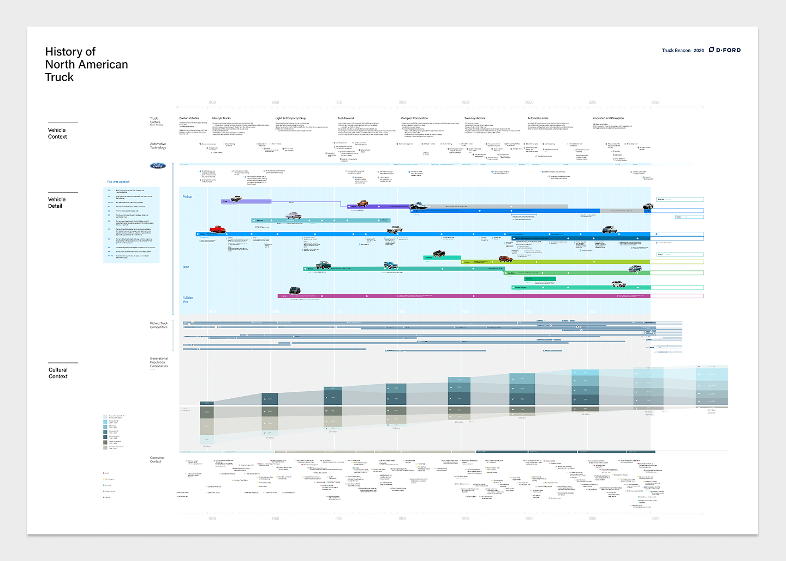
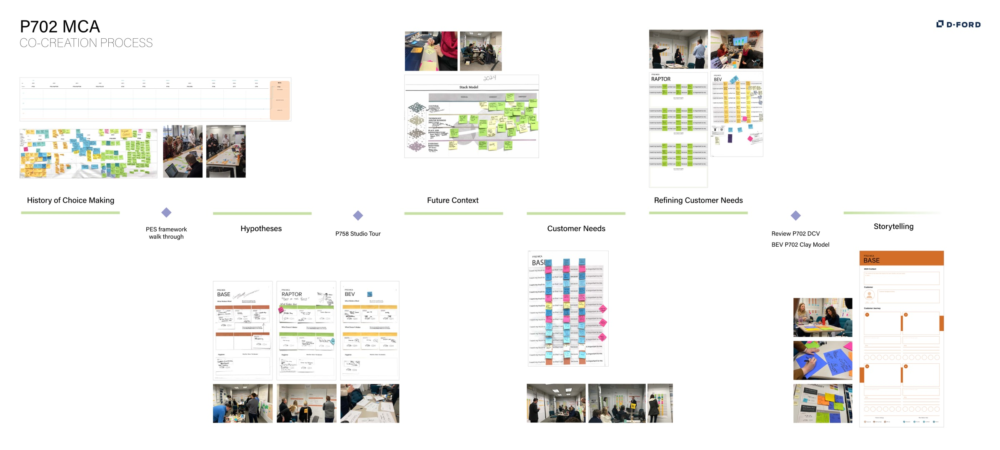
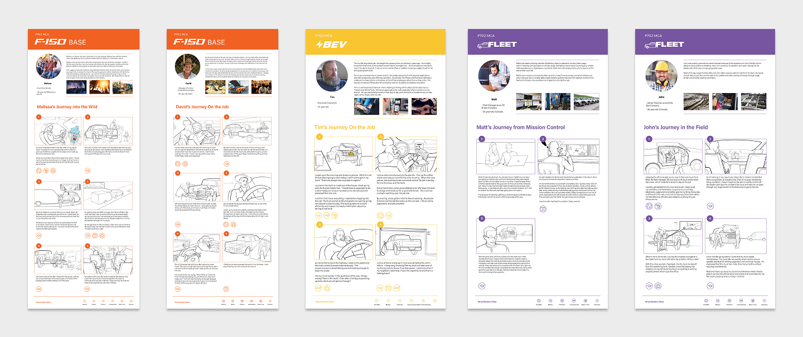

As an Interaction Designer on Ford's Human Centred Design team at HQ in Dearborn, I worked across research, strategy, and product design to inform the long-term direction of the F-series lineup.
My work spanned two interconnected streams: the Future of Truck 2035 strategic roadmap and the Human Centred Design for Product Cycle Assessment (P702 MCA) — a co-creation programme that ran across cross-functional teams to uncover product opportunities and align executive leadership around future customer needs.

Workshop preparation — synthesising customer research and designing probes ahead of co-creation sessions with engineering, strategy, and design partners.
The challenge
Ford's F-series trucks dominated the US market, but the legacy archetypes guiding product decisions missed who was actually buying and driving them. Women truck buyers and Hispanic customers were routinely left out of the design conversation.
Key design challenges
Outdated archetypes: Existing customer models missed emerging segments and changing use patterns.
Fragmented cross-functional alignment: Design, engineering, and strategy teams held conflicting assumptions about who the customer was.
Research to executive decisions: Senior leadership needed research insights translated into clear product choices, not dense reports.
Future-state uncertainty: Planning for 2035 meant working with speculative scenarios about who future truck buyers would be.
Research foundation
Before shaping future visions, the team needed a shared foundation. I collaborated with a researcher to create a comprehensive research map tracing the cultural, technological, and market evolution of North American trucks from the post-war era through to 2020.
This artefact synthesised historic signals across vehicle culture, automotive technology, generational population shifts, and competitive landscape — giving the team a single reference point to inform future inspiration and hypothesis development.

History of North American Truck (2020) — a research map co-created with a researcher, synthesising signals across vehicle culture, automotive technology, generational shifts, and the competitive landscape to ground future product strategy.
Process
Co-creation workshops
I ran and participated in co-creation workshops with cross-functional teams — bringing together design, strategy, engineering, and research partners to collectively surface product opportunities and customer insight gaps. Sessions moved from immersion into hypotheses, future context modelling, and customer needs refinement.

P702 MCA Co-Creation Process (2020) — a timeline visualisation mapping the full co-creation arc: from History of Choice Making and hypothesis development, through Future Context and Customer Needs, to Storytelling and concept synthesis with cross-functional teams.
Designing diary study probes
To inform future-state design with real user behaviour, I synthesised previous research and designed custom probes for diary studies — helping the team gather rich contextual data about how diverse customers actually lived with and used their trucks day to day.
Archetype redefinition
Working across Future of Truck 2035 and the P702 MCA programme, I helped redefine legacy archetypes to better represent the full spectrum of F-series customers — with particular focus on segments that had been historically overlooked, including women and Hispanic truck buyers.
"Good archetypes do not just confirm who already buys the truck; they show who the team has been ignoring."
Storyboard series for leadership alignment
To translate product strategy and technical feasibility into a shared vision, I contributed to a collaborative storyboard series — co-created with design, strategy, and engineering partners. Each storyboard brought an archetype to life through a full day-in-the-life narrative, making abstract customer needs tangible for senior decision-makers.

Vision storyboard poster series (2020) — defining new product archetypes (F-150 BASE, BEV, and FLEET variants) through day-in-the-life narratives for Melissa, David, Tim, Matt, and John. Co-created with design, strategy, and engineering to align leadership around diverse customer realities.
My impact
2035
Strategic roadmap horizon shaped for F-series product line
5+
New archetypes defined including overlooked women and Hispanic segments
2
Core programmes shaped: Future of Truck 2035 & P702 MCA
Future of Truck 2035
Shaped strategic roadmaps for Ford's top products by redefining archetypes and highlighting overlooked segments. Led concept workshops, leveraged user research, and designed probes for diary studies to inform future-state product design.
Human Centred Design for Product Cycle Assessment
Ran co-creation workshops to identify resource gaps and shape future products, aligning outputs with prior research. Created personas and storyboards that resonated with senior leadership — boosting the design team's visibility and cross-functional collaboration across engineering, strategy, and product.
Reflection
This project showed me that some of the highest-leverage design work happens before a single screen is drawn. Changing who counts as a core customer changes every product decision downstream.
The storyboard posters worked because they turned qualitative research into concrete day-in-the-life scenarios that engineering and strategy leaders could debate and act on.